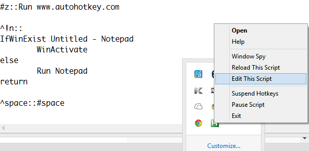
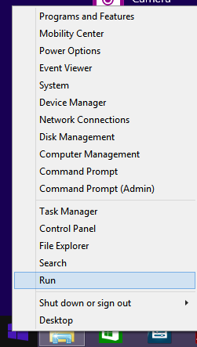
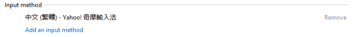
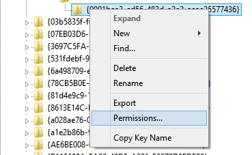

終於在 2014 年底開始使用 Windows 8 ，不過就在剛使用 win8 時，感到非常的不習慣，很多程式都找不到了，輸入法切換也不能用，讓人一整個發怒，花了一些時間來將 win8 熱鍵改成跟 winXP, win7 一樣，以下內容將介紹如何使用 Win8。
不用密碼，自動登入 windows 8
Win8 預設會綁死 hotmail 帳號，並且一定要輸入密碼才能登入 Windows ，而大部分我們使用 Windows 時，都在家裡，並且家人們常會共用一台電腦，所以強迫登入密碼是多餘的功能，下面這個網址有說明如何取消登入密碼這個功能。
修改熱鍵切換輸入法
win8 很奇怪的將切換輸入法熱鍵改成 [win key] + space ，對於非英語系國家的人來說，切換輸入法是很平常的行為，而且都很習慣的用 Ctrl + space 來作切換，修改熱鍵的方式如下。
- download autohotkey
設定 ^space::#space ，最後再把 autohotkey 設定開機時自動啟動就行了。
- ^space::Capslock
- #Left::!^Left ;修改 win key + left
- #Right::!^Right ; 修改 win key + right
- ^Up:: send {PgUp} ;ctrl + 方向鍵上 變成 page up
- ^Down::send {PgDn}; ctrl + 方向鍵下 變成 page down
- ;停用 window key ，當按下 win key 時，右下角不要跳出視窗。
- Lwin::return
- Rwin::return
autohotkey 擷圖
設定 window 開機自動啟動程式
- win8 官方教學 http://support.microsoft.com/kb/2806079
- C:\Users\{your account}\AppData\Roaming\Microsoft\Windows\Start Menu\Programs\Startup
- 將你要自動啟動的程式加到這個資料夾內
找回附屬應用程式, program
- C:\Users\puritys\AppData\Roaming\Microsoft\Windows\Start Menu\Programs
右鍵點擊下方 toolbar，選擇 Toolbars -> New Toolbar... ，再輸入上述的路徑。
自訂輸入法
- 安裝 yahoo keykey 輸入法
- 下載 .cin 輸入法檔，下載完成後，只要手動點擊兩下，就能自動安裝到 Yahoo keykey 輸入法。
移除預設的輸入法，注音輸入法
微軟在 win8 又做了一件腦殘的事情，他們把注音輸入法變成預設輸入方式，而且還不能移除，但是我只會用嘸蝦米輸入法，留著注音輸入法根本就用不到，當我切換輸入法的時候，還會一直切換到注音。
移除方式是先進入 Regedit ，先將滑鼠移到螢幕最左下邊，再點擊右鍵，點擊 Run，最後輸入 regedit 按 enter 鍵。
接著你就成功的進入 regedit 介面，找到下面這個 registry key ，把它刪除，成功刪除後再回到中文輸入法設定，就會發現原本的注音輸入法變成空白，但是刪除鈕變成可以點擊了，趕快把他刪除把。
HKEY_LOCAL_MACHINE\software\Microsoft\CTF\TIP\{B115690A-EA02-48D5-A231-E3578D2FDF80}\LanguageProfile\0x00000404\{B2F9C502-1742-11D4-9790-0080C882687E}
下圖是成功移除注音輸入法的擷圖
如果你刪除的時候，有碰到權限的問題，記得先去修改權限，將你目前使用的帳號，加到 registry key 的權限設定，增加權限時，要去 advance 中，將 registry key 的 owner 改成你的帳號，然後選擇 full control 的權限，看下圖為-修改權限。
後來我把系統升上 Win10 ， 發現這招不管用了，於是我安裝 AutoHotkey 這套軟體，將 Ctrl+ Space 強迫換到 Ctrl + Shift ，因為 Windows 將切換中英文的輸入法的熱鍵改成 Ctrl+Shift ， 這樣改之後一樣可以解法問題。
在 AutoHotkey 的置換語法為 ：
^space:: send ^{LShift}